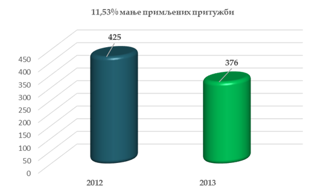
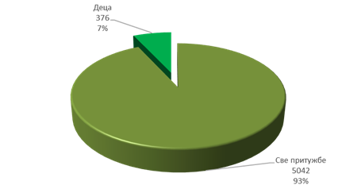
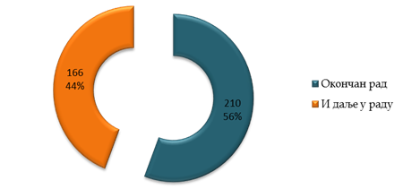
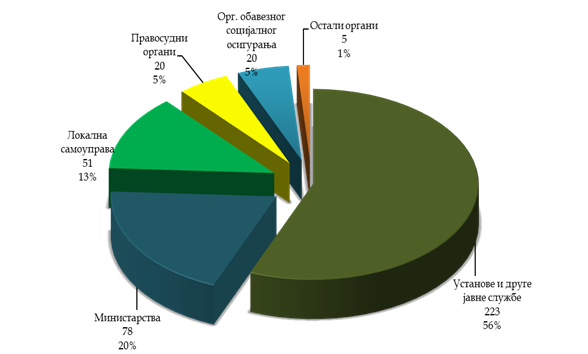

I ПРЕГЛЕД СТАЊА
1. Постигнућа државе
1.1. Потврђена је Конвенција о заштити деце и сарадњи у области међународног усвојења.[69]
1.2. Усвојен је Закон о остваривању права на здравствену заштиту деце, трудница и породиља.[70]
1.3. Донет је Закон о посебним мерама за спречавање вршења кривичних дела против полне слободе према малолетним лицима, (тзв. �Маријин закон�). [71]
2. Резултати рада Заштитника грађана
2.1. У складу са предлозима Заштитника грађана из Годишњег извештаја за 2012. годину[72], усвојен је Закон о посебним мерама за спречавање вршења кривичних дела против полне слободе према малолетним лицима .
2.2. У складу са предлозима Заштитника грађана из Годишњег извештаја за 2012. годину[73], усвојен је Закон о остваривању права на здравствену заштиту деце, трудница и породиља.
2.3. Народној скупштини упућен је Предлог закона о изменама и допунама Закона о раду и Предлог закона о изменама и Закона о финансијској подршци породици са децом, уз потписеподршке 60.000 грађана.
2.4. Препоруке Заштитника грађана допринеле су унапређењу и заштити права детета са сметњама у развоју на образовање и заштити деце од насиља, злостављања и занемаривања.
2.5. Заштитник грађана је учинио видљивијим значај поштовања права детета у јавном информисању и активирао надлежне контролне органе.
2.6. Мишљење и ставови деце представљани су јавности кроз глас Панела младих саветника.
2.7. Јавност је упозната са штетностима телесног кажњавања деце и алтернативама овом облику дисциплиновања деце.
2.8. Заштитник грађана је у 2013. години у овој области примио 376 притужби. У истом периоду окончао је рад на укупно 409 предмета, примљених у 2013. и ранијих година. Утврдио је укупно 94 различите повреде права. У циљу отклањања пропуста упутио је 62 препоруке, од којих су прихваћене свих 62 (100%), а извршено 59. У истом периоду упућена су три (3) мишљења, а у 52 (12.71%) случаја, поступци су обустављени, јер су органи отклонили пропуст по сазнању да је Заштитник грађана покренуо поступак контроле њиховог рада.
3. Мањкавости на државном нивоу
3.1. Још увек није потврђен Факултативни протокол уз Конвенцију УН о правима детета о процедури подношења притужби Комитету за права детета, који је државапотписала фебруара 2012. године.
3.2. Није успостављен примерен и делотворан механизам подршке и помоћи родитељима који се непосредно старају о деци са сметњама у развоју, инвалидитетом или тешко болесној деци чија стања захтевају сталну бригу, негу и помоћ.
3.3. Република Србија није пружила ауторитативни одговор у сваком конкретном случају �несталих беба�, на шта ју је обавезао Европски суд за људска права[74] позивајући се на препоруке Заштитника грађана садржане у Посебном извештају о случајевима тзв. �несталих беба�.[75]
3.4. Кривични законик није усаглашен са Конвенцијом Савета Европе о заштити деце од сексуалног искоришћавања и сексуалног злостављања. [76]
3.5. Деца жртве кривичних дела нису довољно заштићена од секундарне трауматизације и виктимизације у поступцима пред органима гоњења и правосудним органима.
3.6. Није донет нови Закон о уџбеницима, којим ће се уредити начин и поступак оцене квалитета, одобравања и набавке уџбеника за ученике основних и средњих школа.
3.7. Насиље у школама�како вршњачко, тако и насиље запослених према ученицима�раширено је и даље, јер поступање школа често није у складу са правилима и стандардима прописаним за случај сумње/сазнања о насиљу.
3.8. Систем додатне подршке у образовању деце са сметњама у развоју и инвалидитетом није довољно развијен, a постојеће услуге подршке не пружају се у довољној мери.
3.9. Физичко кажњавање деце и даље није законом забрањен начин васпитања детета, а информације о штетности физичког кажњавања и о алтернативним методама васпитања детета недовољно су доступне грађанима.
3.10. Извештавање о деци и представљање деце у јавности оптерећено је сензационализмом, а медији недовољно воде рачуна о томе да садржаји емисија и текстова који се односе на децу буду прикладни узрасту детета.
3.11. Механизам одређивања и наплате родитељског издржавања није довољно ефикасан.
4. Најзначајнијепрепоруке, мишљења и законодавне иницијативе Заштитника грађана по којима није поступљено
4.1. Није поступљено по следећим предлозима за побољшање положаја грађана у односу на органе управе из Годишњег извештаја Заштитника грађана за 2012. годину:
� да се потврди Факултативни протокол уз Конвенцију о правима детета о процедури подношења притужби Комитету за права детета;
� да се изменама и допунама одговарајућих закона обезбеди помоћ и подршка породицама које се непосредно брину о својој деци са сметњама у развоју, инвалидитетом, односно тешко болесној деци, којој је због природе сметњи или болести потребна стална нега;
� да се организују кампање подизања свести јавности о штетности телесног кажњавања детета и о алтернативним методама васпитања и дисциплиновања деце;
� да се обезбеди стручна помоћ и подршка родитељима у васпитању деце, кроз механизме социјалних и здравствених услуга (саветовалишта за родитеље, телефонске линије, �школе родитељства�и др.);
� да се обезбеди ефикасно и правовремено покретање и вођење поступака у циљу утврђивања личне одговорности запослених у школама за повреду забране насиља, злостављања и занемаривања, за повреду радне обавезе, и за пропусте у спровођењу мера заштите детета од насиља, злостављања и занемаривања. [77]
4.2. Народна скупштина није разматрала предлоге закона о изменама и допунама Закона о раду и Закона о финансијској подршци породици са децом, које је поднео Заштитник грађана[78] уз подршку 60.000 грађана, а Влада је дала мишљење да Предлог закона о изменама и допунама Закона о финансијској подршци породици са децом не треба усвојити.
4.3. Република Србија није донела посебан закон који би омогућио утврђивање истине у случајевима тзв. �несталих беба�, у складу са пресудом Европског суда за људска права и препоруком Заштитник грађана.
4.4. Ни након скоро две године од поновног упућивања Иницијативе Заштитника грађана за измене и допуне Кривичног законика[79] у циљу његовог усклађивања са Конвенцијом Савета Европе о заштити деце од сексуалног искоришћавања и сексуалног злостављања, Министарство правде и државне управе ову иницијативу није разматрало.
4.5. Министарство правде и државне управе, Министарство рада, запошљавања и социјалне политике, Министарство здравља и основни и виши судови у Београду, Нишу, Новом Саду и Крушевцу нису се ни на који начин изјаснили о Мишљењу које им је Заштитник грађана упутио о неопходности веће заштите деце жртава кривичних дела од секундарне трауматизације и виктимизације током кривичних поступака.
4.6. Министарство просвете, науке и технолошког развоја није, уважавајући примедбе стручне јавности, припремило нови законски текст који уређује области одобравања, издавања и набавке уџбеника и других наставних средстава.
4.7. ОШ �Сретен Младеновић Мика� из Ниша и поред више састанака са Заштитником грађана, одбила је да поступи по препорукама овог органа [80]и преиспита рад запослених и њихову одговорност за учињене пропусте на штету трагично преминулог ученика � које је утврдио не само Заштитник грађана � већ и просветна инспекција града Ниша и Прекршајни суд у Нишу.
4.8. Полицијска управа Нови Сад није поступила по препорукама Заштитника грађана[81] и мерама које је предложио Сектор унутрашње контроле полиције.
5. Образложење
Потврђивање Хашке конвенције о заштити деце и сарадњи у области међународног усвојења омогућило је да се, у случајевима када нема услова за заснивање усвојења детета у Републици Србији, на квалитетнији, по интересе детета, бољи и безбеднији начин и уз примену међународно признатих процедура, заснује међународно усвојење и детету на тај начин обезбеди трајно породично окружење. Досадашња искуства показују да је тешко пронаћи заинтересовану домаћу усвојитељску породицу за децу са сметњама у развоју и децу ромског порекла.
Доношењем Закона о остваривању права на здравствену заштиту деце, трудница и породиља, деца више не сносе последице несавесности обвезника доприноса за здравствено осигурање и пропуста државних органа који су дужни да контролишу уплату доприноса. Заштитник грађана је на овај проблем указао још 2012. године [82] када је надлежним органима упутио препоруке.[83]
Закон о посебним мерама за спречавање вршења кривичних дела против полне слободе према малолетним лицима је у правни систем унео нове облике кривичноправне заштите деце жртава кривичних дела против полне слободе, чије је увођење Заштитник грађана предлагао 2011. и 2012. године.[84]
Инклузивно образовање деце са сметњама у развоју оптерећено је бројним проблемима и слабостима услед недостатка одговарајућих правила и стандарда у пружању додатне подршке у образовању, непрецизности постојећих прописа, њихове непотпуне примене и постојања бројних предрасуда и стереотипа у односу на школовање деце са сметњама у развоју у систему општег образовања и њихов живот у заједници. Пуно остваривање права детета са сметњама у развоју на квалитетно и доступно образовање није могуће без прецизног уређења рада, финансирања и контроле рада интер-ресорних комисија, мера додатне подршке и начина њиховог остваривања и финансирања, обавеза и одговорности надлежних органа и увођења механизма контроле и праћења ефеката � што је Заштитник грађана препоручио још 2012. године.[85]
Део примедби Заштитника грађана изнетих у мишљењу овог органа о Нацрту закона о изменама и допунама Закона о основама система образовања и васпитањаресорно министарство је усвојило и имплементирало у законски текст. Нажалост, остале су неприхваћене примедбе Заштитника грађана које су се односиле на унапређење инклузивног образовања и система подршке ученицима којима је она потребна и експлицитну заштиту од дискриминације ученика другачије сексуалне оријентације.
За разлику од претходних година, сарадња Министарства просвете, науке и технолошког развоја и Заштитника грађана је унапређена. Министарство је благовремено достављало Заштитнику грађана све информације и поступило је по свим препорукама у области права детета које је овом органу Заштитник грађана упутио у извештајном периоду. Посебно квалитетну сарадњу са Заштитником грађана оствариле су школске управе у Београду и Новом Саду, у случајевима када су �паралелно са поступком контроле који је водио Заштитник грађана � предузимале мере ради заштите права сваког детета на квалитетно образовање. Нажалост, сенку на степен остварене сарадње бацила је јавна полемика Министарства са Заштитником грађана, поводом бројних пропуста Министарства након сазнања о могућим нерегуларностима у организацији завршног испита за ученике основних школа. [86]
У одсуству адекватних услуга у системима здравства, социјалне заштите, образовања и услуга у локалној заједници за децу са сметњама у развоју и инвалидитетом и тешко болесну децу, којој је неопходна стална нега и помоћ, улогу пружалаца ових услуга преузимају родитељи, због чега не могу да се запосле или су принуђени да напуштају посао. Стога су предлози закона о изменама и допунама Закона о раду и Закона о финансијској подршци породици са децом које је поднео Заштитник грађана били усмерени на обезбеђивање финансијске подршке и радноправних олакшица родитељима који самостално негују децу, до момента док им систем не понуди адекватне услуге када би родитељи могли да се посвете раду, односно тражењу запослења. Предлози Заштитника грађана нису разматрани, а Министарство рада, запошљавања и социјалне политике је � сматрајући да може понудити бољи и финансијски одржив предлог � формирало мултидисциплинарну радну групу, коју чине представници више државних органа и организација, као и представници родитеља.
Посебним извештајем о случајевима тзв. �несталих беба� Заштитник грађана је утврдио бројне недостатке у раду надлежних органа управе и установа које врше јавна овлашћења, због чега се �без посебне истраге специјализованих државних органа не може са потпуном поузданошћу рећи да бебе нису противзаконито одвајане од породица�.[87]Једна од препорука Заштитника грађана је доношење посебног закона како би се омогућило спровођење овакве истраге. Полазећи од ове препоруке, Европски суд за људска права је пресудом наложио Републици Србији да обезбеди механизме испитивања случајева, уз препоруку да тај механизам буде доношење посебног закона. Посебан извештај Заштитника грађана представљен је на редовном састанку са члановима Комитета министара Савета Европе.
Одредбе Кривичног законика захтевају усаглашавање са Конвенцијом Савета Европе о заштити деце од сексуалног искоришћавања и сексуалног злостављања (�Ланзарот конвенција�). Неопходне измене односе се на редефинисање неких кривичних дела, подизање (минималне) запрећене казне код одређених дела, измене и допуне одредби о мерама безбедности и начину на који се - у одређеним случајевима � предузима кривично гоњење.
У Републици Србији нема довољно ресурса за примену законом прописаних техника испитивања детета жртве, а постојећи се недовољно користе. Подаци добијени од основних и виших судова у Београду, Крушевцу, Нишу и Новом Саду указују да судови ретко користе могућност саслушања деце жртава у посебно намењеним и опремљеним просторијама (тзв. �скрин собама�), којих, са друге стране, у Републици има само пет.[88]
Иако је дуго ишчекиван, нови Закон о уџбеницима и другим наставним средствима није донет у извештајном периоду. Нацрт закона, који је Министарство просвете, науке и технолошког развоја представило на јавној расправи претрпео је озбиљне критике стручне јавности, јер није отклонио низ проблема који су до сада пратили издавање, оцену квалитета, одобравање и набавку уџбеника, на шта је Заштитник грађана у више наврата упозорио, а надлежним органима упутио препоруке.
Насиље у школама је и даље раширена појава, а поступање школа често није у складу са правилима и стандардима прописаним за случај сумње/сазнања о насиљу. Оно што нарочито изазива забринутост јесте чињеница да постоје установе образовања које одбијају да учињене пропусте исправе, а свој рад прилагоде обавезама које имају у заштити ученика од насиља. Иако су такви случајеви ретки, ОШ �Сретен Младеновић Мика� из Ниша је један од најфлагрантнијих примера. Ова школа је одбила да поступи по препорукама Заштитника грађана и тиме отклони/умањи последице бројних пропуста у заштити ученика од насиља које су - поред Заштитника грађана - утврдили и просветна инспекција Града Ниша и Прекршајни суд у Нишу и због којих је Школа правноснажно кажњена највишом запрећеном новчаном казном у прекршајном поступку.
Од иначе квалитетне сарадње Министарства унутрашњих послова са Заштитником грађана одступила је Полицијска управа Нови Сад, која је одбила да поступи по препорукама Заштитника грађана и поред поновљеног позива да то учини. Стога нису отклоњене/умањене последице незаконите, неправилне и непрофесионалне примене полицијских овлашћења према детету, коју је � поред Заштитника грађана � претходно утврдио и Сектор унутрашње контроле полиције (као интерни контролни механизам).
Приликом извештавања о деци и у емисијама у којима учествују деца, често се не водидовољно рачуна о дететовој приватности, ризику од додатне трауматизације детета које је жртва трауматског догађаја и ризицима од штете коју дете може претрпети услед излагања непримереним садржајима. Иако органи у чијој је надлежности надзор над радом средстава јавног информисања савесно спроводе поступак и изричу мере, они то чине само по пријавама. Остваривање и заштита права детета на приватност и права детета на заштиту од излагања штетним садржајима захтева, међутим, веће ангажовање контролних механизама по службеној дужности.
Заштитник грађана је подржао иницијативу Коалиције за унапређење система обавезног издржавања са предлозима за побољшање положаја деце која не примају родитељско издржавање и подизање ефикасности постојећих механизам наплате. Достављајући иницијативу министарству Заштитник грађана је указао да су нужне измене у систему наплате родитељског издржавања како би се обезбедило ефикасно одређивање и наплата издржавања, при чему би исплата издржавања из државних средстава била мера последњег избора коју би пратили ефикасни механизми регресирања од несавесних дужника издржавања.[89]
II ПРИТУЖБЕ
У области права детета Заштитник грађана је у 2013. години примио 371 притужбу, а по сопственој иницијативи истраживао 5 случајева. Поменута 371 притужба чини 7,47% од укупног броја притужби које је Зaштитник грађана примио у 2013. години. Број притужби у овој години је смањен за 11,53% у односу на претходну годину.
Графикон 3 - Права детета - број примљених притужби у односу на 2012.

Графикон 4 - Притужбе у области права детета у односу на све примљене притужбе у току 2013.

Заштитник грађана је у области права детета у 2013. години примио у рад укупно 376 предмета. Окончао је рад на 210 предмета из 2013. године, док је 166 и даље у раду.
Графикон 5 - Права детета � рад на предметима из 2013.

У 2013. години, Заштитник грађана је у области права детета окончао укупно 409 предмета, од којих је 210 из 2013. године, а остатак из ранијих година, што је приказано у табели 7.
Табела 9 - Права детета - начин на који је окончан рад на предметима из 2013. и ранијих година
|
Одбачене притужбе |
152 |
37,16% |
|
Неосноване притужбе |
148 |
36,19% |
|
Орган отклонио пропуст по сазнању да је покренут поступак контроле његовог рада (обустава поступка) |
52 |
12,71% |
|
Предмети обухваћени препорукама |
22 |
5,38% |
|
Мишљење |
1 |
0,24% |
|
Oдустанак притужиоца |
15 |
3,67% |
|
Саопштење ЗГ[90] |
19 |
4,65% |
|
Укупно |
409 |
100 % |
Највећи број примљених притужби Заштитник грађана одбаци због тога што нису испуњени Законом прописани услови за поступање по њима. Притужбе се одбацују због ненадлежности, неблаговремености, преурањености, анонимности и неуредности.
Табела 10 - Права детета - разлози за одбачај притужбе у 2013.
|
Ненадлежност ЗГ�упућен на надлежни орган |
22 |
14,47% |
|
Неблаговременост |
7 |
4,61% |
|
Преурањененост � посаветован о расположивим правним средствима |
70 |
46,05% |
|
Анонимност |
2 |
1,32% |
|
Неуредност |
50 |
32,90% |
|
Надлежност локалног омбудсмана |
1 |
0,66% |
|
Укупно: |
152 |
100% |
Веома значајан сегмент поступања Заштитника грађана по притужбама чини пружање саветодавне-правне помоћи, коју Заштитник грађана пружа и онда када одбаци притужбу због тога што за њу није надлежан или због преурањености. Заштитник грађана у овим случајевима притужиоца упућује на надлежни орган или га посаветује о расположивим правним средствима.
Као што се види из табеле 3. у 60,53%одбачених притужби Заштитник грађана је грађанима пружио саветодавно-правну помоћ у остваривању њихових права пред надлежним органима.
Табела 11 - Права детета - пружена саветодавно-правна помоћ
|
|
број |
проценат |
|
Одбачене притужбе |
152 |
100% |
|
Ненадлежност - упућен на надлежни орган |
22 |
14,47% |
|
Преурањеност - посаветован о расположивим правним средствима |
70 |
46,05% |
|
Укупно: пружена саветодавно-правна помоћ |
92 |
60,53% |
Поступајући по притужбама из 2013. године и ранијих година, надлежним органима упућене су укупно 62 препоруке, које су се односиле на 22 предмета. До 31. 12. 2012. године 100% препорука је извршено од стране надлежних органа којима су упућене.
Табела12 - Права детета - поступање по препорукама из 2013.
|
Препоруке |
број |
проценат |
|
Укупно |
62 |
100 |
|
Извршене |
62 |
100 |
|
Неизвршене |
0 |
0 |
|
у року за извршење |
0 |
0 |
У области права детета у 376 притужби евидентиране су 742 различите повреде права. Највећи број притужби указивао је на повреде посебних права у области права детета. Право на образовање као право из групе економских, социјалних и културних права појављује се више од 100 пута у поднетим притужбама.
Табела 13 - Права детета - повреде на које су указивали притужиоци
|
Посебна правау области права детета |
526 |
70,89% |
|
Економскасоцијална икултурна права |
150 |
20,22% |
|
Грађанска и политичка права |
35 |
4,72% |
|
Право на добру управу |
31 |
4,18% |
|
Укупно |
742 |
100% |
Табела 14. приказује структуру посебних права односу на 526 евидентираних повреда ових права.
Табела 14 - Посебна права у области права детета, њихов број и проценат
|
Врста повређеног права |
Број |
% |
Врста повређеног права |
Број |
% |
|
Право на поштовање најбољих интереса детета |
183 |
34,79% |
Права детета у сукобу са законом |
4 |
0,76% |
|
Право на заштиту од насиља, злостављања и занемаривања |
96 |
18,25% |
Право детета на одржавање личних односа са породицом порекла и блиским особама |
4 |
0,76% |
|
Право на правилан развој детета |
56 |
10,65% |
Право детета на лични идентитет |
3 |
0,57% |
|
Право детета на одржавање личних односа са родитељем са којим не живи |
43 |
8,17% |
Право детета на здраво окружење |
3 |
0,57% |
|
Права детета са сметњама у развоју на квалитетан живот и посебну заштиту државе |
42 |
7,98% |
Право детета на заштиту од експлоатације |
3 |
0,57% |
|
Помоћ родитељима у остваривању родитељства |
22 |
4,18% |
Право детета на спајање породица |
2 |
0,38% |
|
Право детета на заједнички живот са родитељима |
13 |
2,47% |
Права детета при усвојењу |
2 |
0,38% |
|
Право детета на одговарајући животни стандард |
11 |
2,09% |
Право детета на очување личног идентитета |
2 |
0,38% |
|
Помоћ породици у остваривању права детета на одговарајући животни стандард |
11 |
2,09% |
Посебна заштита материнства |
1 |
0,19% |
|
Право на проверу начина збрињавања детета под надзором државе |
10 |
1,90% |
Забрана дискриминације детета због родитеља |
1 |
0,19% |
|
Право детета на изражавање сопственог мишљења |
8 |
1,52% |
Право детета на одмор и рекреацију |
1 |
0,19% |
|
Право на заштиту од родитељске отмице |
|
5 |
0,95% |
Графикон 6. приказује органе и организације на чији рад су се грађани најчешће притуживали.
Графикон 6 - Органи и организације на чији рад су се грађани најчешће притуживали у области права детета

Заштитник грађана је преко своје интернет странице намењене деци (www.pravadeteta.rs) примио 133 питања деце или одраслих забринутих за положај деце. Питања која су на овај начин постављана указивала су на 193 различите повреде права, и то на 66 повреда из области економских, социјалних и културних права од којих се највећи број (преко 50%) односио на проблеме образовања и васпитања и 127посебних права у области детета.
Табела15 � Најчешћа питања постављена на сајту www.pravadeteta.rs
|
Право на поштовање најбољих интереса детета |
47 |
37,01% |
|
Право на заштиту од насиља, злостављања и занемаривања |
25 |
19,69% |
|
Право детета на одговарајући животни стандард |
11 |
8,66% |
|
Права детета са сметњама у развоју на квалитетан живот и посебну заштиту државе |
8 |
6,30% |
|
Помоћ родитељима у остваривању родитељства |
6 |
4,72% |
|
Право на правилан развој детета |
4 |
3,15% |
|
Право детета на заједнички живот са родитељима |
4 |
3,15% |
|
Право детета на одржавање личних односа са родитељем са којим не живи |
4 |
3,15% |
|
Право детета на изражавање сопственог мишљења |
4 |
3,15% |
|
Остала права |
14 |
11,02% |
|
Укупно |
127 |
100% |
III ОСТАЛЕ АКТИВНОСТИ
Панел младих саветника
Панел младих саветника је саветодавно тело Заштитника грађана, које чини тридесеторо деце узраста 13 � 17 године из целе Србије, изабраних уз поштовање начела територијалне заступљености, родне равноправности и учешћа деце из осетљивих друштвених група. Активности у 2013. години Панел је спроводио у обновљеном саставу: нових 12 чланица и чланова заменило је оне који из различитих разлога нису више могли да учествују у раду овог тела.
Чланице и чланови Панела младих саветника дебатовали су са децом и одраслима о примени физичког кажњавања и позитивном родитељству у васпитању и дисциплиновању деце. Овим дебатама, које су одржаване у десет школа у више градова,јавности је пружена могућност да се упозна не само са концептом позитивног родитељства и штетношћу физичког кажњавања већ и са ставовима деце и младих о телесним казнама и позитивним родитељским праксама, које је Панел младих саветника прикупио током прошлогодишњег вршњачког истраживања.
Ставове деце и младих о физичком кажњавању и позитивном родитељству Панел младих саветника је представио и на III конгресу Друштва за дечју и адолесцентну психијатрију и сродне струке Србије (ДЕАПС).
Друге активности[91]
Рад Заштитника грађана и његови закључци, ставови и препоруке у вези са остваривањем права детета, биле су предмет интересовања Одбора за права детета Народне скупштине, али и других одбора (Одбор за образовање, науку, технолошко развој и информатичко друштво, Одбор за рад, социјална питања, друштвену укљученост и смањење сиромаштва).
Преко интерактивног портала www.pravadeteta.rs, Заштитник грађана примио је 133 питања деце и одраслих. Број питања је повећан у односу на прошлу годину, а она се односе најчешће на питања у вези са проблемом образовања и васпитања ипосебним правима у области детета. Неки одговори Заштитника грађана, који су нарочито значајни или се односе на положај већег броја деце, објављени су на интернет страници www.pravadeteta.rs
IV КАРАКТЕРИСТИЧНИ СЛУЧАЈЕВИ
Потребна је боља заштита деце жртава од секундарне трауматизације
Информације које су Заштитнику грађана дали Министарство рада, запошљавања и социјалне политике и основни и виши судови у Београду, Нишу, Новом Саду и Крушевцу су указале да у Србији постоји свега пет посебно опремљених и деци прилагођених просторија (�скрин собе�) у оквиру система социјалне заштите, као и да мали број судова ове просторије користи када испитује децу жртве. Заштитник грађана је мишљењемуказао на посебно осетљив положај деце жртава кривичних дела и потребу да државни органи у највећој мери штите децу од секундарне виктимизације и трауматизације. Заштитник грађана је позвао судове и надлежне органе да у предузимању мера према деци жртвама у што већој мери користе већ постојеће ресурсе (�скрин собе� и техничка средства за пренос и бележење слике и звука) и доследно примењују законске одредбе о заштити детета жртве од додатне виктимизације и трауматизације, као и да предузимају мере у циљу обезбеђивања свим судовима доступних "скрин соба" и одговарајућих техничких средстава намењених узимању изјава деце жртава на начин који спречава дететову поновну трауматизацију.
Нико није овлашћен да тражи искључење ученика са сметњама у развоју из школе/одељења.
Заштитник грађана је примио притужбе више родитеља ученика једног одељења основне школе. Иако су се односиле на исте догађаје, притужбе су имале супротстављене захтеве: једном притужбом подносиоци су тражили да се њиховом детету са сметњама у развоју омогући несметано школовање у школи и одељењу које похађа; преосталим притужбама подносиоци су захтевали да се ученик са сметњама у развоју искључи из те школе или макар одељења и пребаци у другу (�специјалну� или редовну) школу/одељење. Подносиоци ове групе притужби организовали су �бојкот наставе� , односно донели су одлуку да њихова деца неће похађати наставу до удовољавања њиховом захтеву. Поступак који је Заштитник грађана водио, и у току кога је подносиоце и контролисане органе обавестио о свом ставу у вези са захтевима за искључивањем било ког ученика из школе, обустављен је након процене да је школа отклонила пропусте у раду. Паралелно са поступком Заштитника грађана, Министарство просвете, науке и технолошког развоја је школи пружало стручну подршку, а кроз стручно �педагошки и инспекцијски надзор ауторитативно затражило поштовање закона од стране свих учесника образовног процеса. Овим активностима и мерама Министарство је �бојкот наставе� свело на појединачне случајеве.
Учешће детета у емисији чији садржај није примерен деци
Републичка радио-дифузна агенција је, током поступка контроле законитости и правилности рада који је покренуо Заштитник грађана, упозорио емитера � телевизију �Пинк� на неопходност повећане уредничке пажње у циљу заштите интереса детета приликом емитовања програмских садржаја. Упозорење је изречено због тога што је ТВ �Пинк� емитовала емисију �Гранд шоу� у којој је дете ниског календарског узраста изводило песму чији је садржај непримерен узрасту детета и који садржи нескривене сексуалне алузије.
V ПРЕДЛОЗИ ЗА ПОБОЉШАЊЕ ПОЛОЖАЈА ГРАЂАНА У ОДНОСУ НА ОРГАНЕ УПРАВЕ
1. Народна скупштина треба да донесе Закон о потврђивању Факултативног протокола уз Конвенцију о правима детета о процедури подношења притужби Комитету за права детета, који је Србија потписала фебруара 2012. године.
2. Народна скупштина треба да размотри предлоге закона о изменама и допунама Закона о раду и Закона о финансијској подршци породици са децом, које је поднео Заштитник грађана.
3. Министарство правде и државне управе треба да настави и интензивира рад на усклађивању прописа са одредбама Конвенције Савета Европе о заштити деце од сексуалног искоришћавања и сексуалног злостављања, ради обезбеђивања пуне заштите деце жртава од секундарне трауматизације и виктимизације.
4. Народна скупштина и Влада треба да обезбеде успостављање механизма истраживања случајева тзв. "несталих беба" у складу са пресудом Европског суда за људска права.
5. Министарство просвете, науке и технолошког развоја и просветне инспекције јединица локалних самоуправа треба да у знатно већем обиму контролишу поступање установа образовања и васпитања у случајевима насиља над ученицима, а нарочито благовремену, правилну и савесну примену Закона о основама система образовања и васпитања, Правилника о протоколу поступања у установи у одговору на насиље, злостављање и занемаривање, Општег протокола за заштиту деце од злостављања и занемаривања и Посебног протокола за заштиту деце и ученика од насиља, злостављања и занемаривања у образовно-васпитним установама.
6. Министарство просвете, науке и технолошког развоја и просветне инспекције јединица локалних самоуправа треба да обезбеде ефикасно и правовремено покретање и вођење поступака у циљу утврђивања личне одговорности запослених у школама за повреду забране насиља, злостављања и занемаривања, за повреду радне обавезе и за пропусте у спровођењу мера заштите детета од насиља, злостављања и занемаривања.
7. Министарство просвете, науке и технолошког развоја треба да интензивира активности на уређивању услуга додатне подршке и помоћи ученицима са сметњама у развоју у образовању, врстама услуга, начина њиховог пружања и финансирања, поступка процене потреба детета и ученика, као и оснивања, рада и контроле интер-ресорних комисија.
8. Министарство просвете, науке и технолошког развоја треба да обезбеди редовне едукације у установама образовања и васпитања, усмерене на повећавање осетљивости запослених у установама према деци са сметњама у развоју и усвајању практичних вештина и знања у раду са њима.
9. Министарство просвете, науке и технолошког развоја треба да, уважавајући примедбе стручне јавности, припреми нови законски текст који уређује области одобравања, издавања и набавке уџбеника и других наставних средстава.
10. Министарство рада, запошљавања и социјалне политике, Министарство здравља и Министарство просвете, науке и технолошког развоја треба да организују кампање подизања свести јавности о штетности физичког кажњавања детета и о алтернативним методама васпитања и дисциплиновања деце и да обезбеде стручну помоћ и подршку родитељима у васпитању деце, кроз механизме социјалних и здравствених услуга (саветовалишта за родитеље, телефонске линије, �школе родитељства� и др).
11. Влада треба да припреми и Народној скупштини предложи усвајање закона којим ће се увести законска забрана физичког кажњавања деце у свим срединама.
12. Републичка радио-дифузна агенција и Министарство културе и информисања треба да интензивирају своје надзорне активности, укључујући и поступање по службеној дужности, у случајевима кршења права детета у средствима јавног информисања, а према одговорним медијима изричу одговарајуће мере.
13. Министарство омладине и спортатреба да измени и допуни Закон о спорту и уреди област уговарања између спортских клубова/организација и малолетних спортиста.
14. Министарство просвете, науке и технолошког развоја треба да обезбеди да ОШ �Сретен Младеновић Мика� из Ниша поступи по препорукама Заштитника грађана и предузме мере утврђивања појединачне одговорности за досадашње непоступање по препорукама.
15. Министарство унутрашњих послова треба да обезбеди да Полицијска управа Нови Сад поступи по препорукама Заштитника грађана и предузме мере утврђивања појединачне одговорности за досадашње непоступање по препорукама.